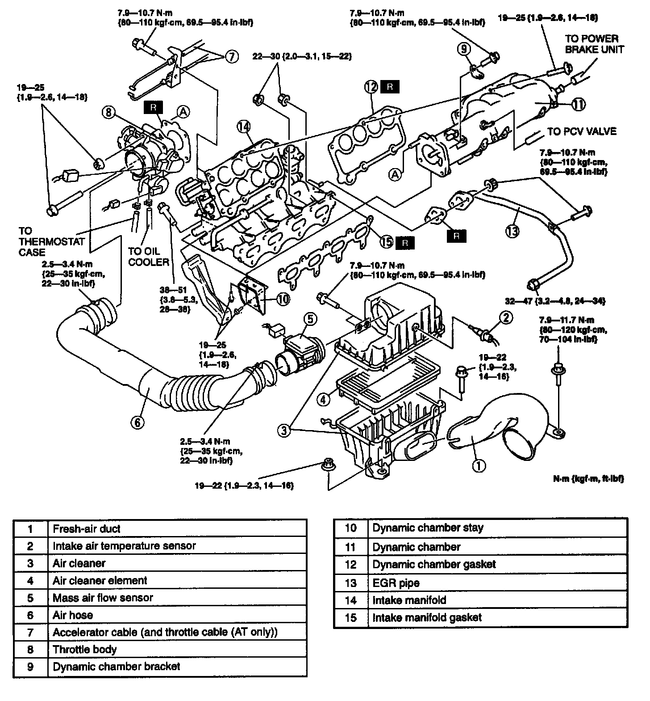
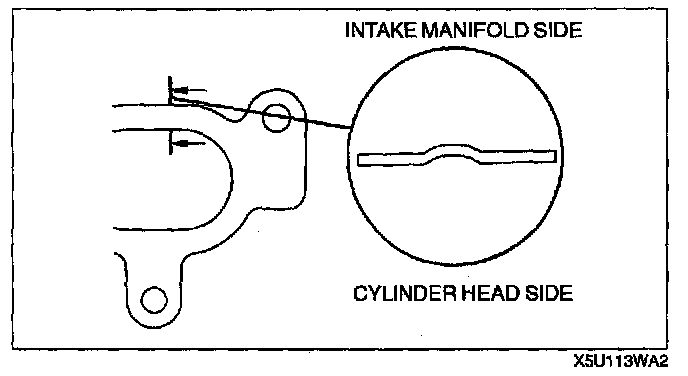
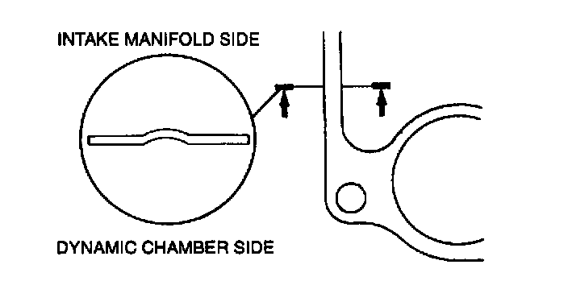

Intake Air System
WARNING:- When the engine and intake-air system are hot, they can badly burn. Turn off the engine and wait until they are cool before removing or installing the intake-air system.

1. Disconnect the negative battery cable.
2. Drain the engine coolant from radiator. (Refer ENGINE COOLANT REPLACEMENT.)
3. Remove in the order indicated in the table.
4. Install in the reverse order of removal.
5. Refill the engine coolant to radiator. (Refer to ENGINE COOLANT REPLACEMENT.)

Intake Manifold Gasket Installation Note
- To install the intake manifold gasket, make sure that the convex side of the gasket is faced to the intake manifold side.

Dynamic Chamber Gasket Installation Note
- To install the dynamic chamber gasket, make sure that the convex side of the gasket is faced to the intake manifold side.
Dynamic Chamber Stay Installation Note
- Snugly tighten the bolts, then tighten the dynamic chamber side bolts before tightening the intake manifold side bolts.
Dynamic Chamber Bracket Installation Note
- Snugly tighten the bolts, then tighten the dynamic chamber side bolt before tightening the fuel distributor side bolt.